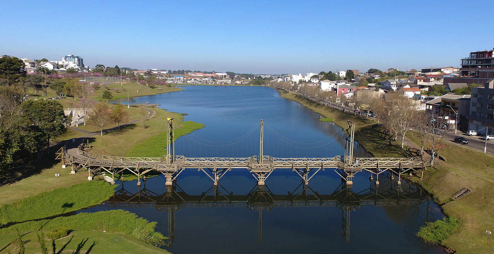

Guarapuava é um município brasileiro localizado na região centro-sul do estado do Paraná. É o maior município em extensão territorial do estado, e o nono mais populoso, com uma população de 189.630 habitantes, de acordo com estimativas do Instituto Brasileiro de Geografia e Estatística de 2025.
